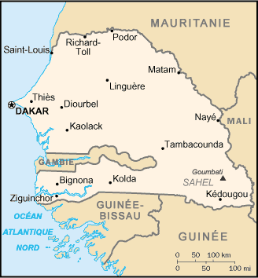
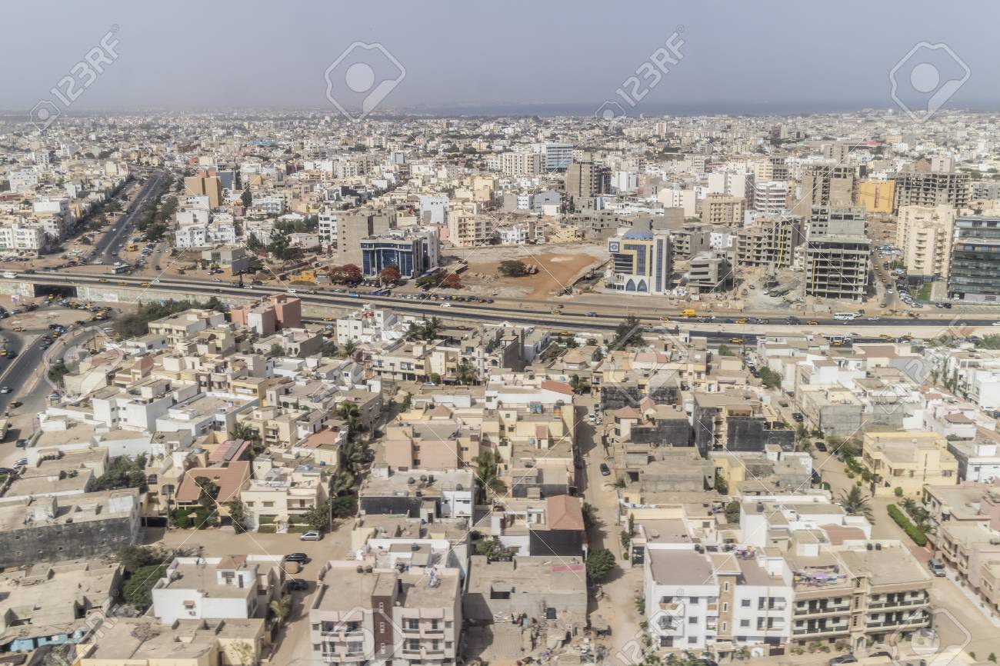
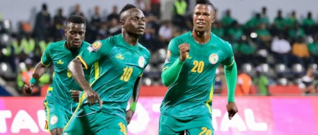

Le Sénégal, en forme longue la république du Sénégal, est un pays d'Afrique de l'Ouest. Il est bordé par l'océan Atlantique à l'ouest, la Mauritanie au nord, à l'est par le Mali, la Guinée et la Guinée-Bissau au sud. La Gambie forme une quasi-enclave dans le Sénégal, pénétrant à plus de 300 km à l'intérieur des terres. Les îles du Cap-Vert sont situées à 560 km de la côte sénégalaise. Le pays doit son nom au fleuve qui le borde à l'est et au nord et qui prend sa source dans le Fouta-Djalon en Guinée. Le climat est tropical et sec avec deux saisons : la saison sèche et la saison des pluies. L'actuel territoire du Sénégal a vu se développer plusieurs royaumes dont le Djolof, vassaux des empires successifs du Ghana, du Mali et Songhaï. Après 1591, il subit le morcellement politique ouest-africain consécutif à la bataille de Tondibi. Au XVIIe siècle, plusieurs comptoirs appartenant à différents empires coloniaux européens s'établissent le long de la côte, ils servent de support au commerce triangulaire. La France prend peu à peu l'ascendant sur les autres puissances puis érige Saint-Louis, Gorée, Dakar et Rufisque en communes françaises régies selon le statut des Quatre communes. Avec la Révolution industrielle, la France désirait construire un chemin de fer afin de les relier et entra en conflit avec le Damel du Cayor, Lat Dior. Ce conflit permit à la France de faire officiellement du Cayor un protectorat en 1886, un an après la fin de la conférence de Berlin. La colonisation de l'ensemble de l'Afrique de l'Ouest est alors amorcée et Saint-Louis, puis Dakar deviendront les deux capitales successives de l'Afrique-Occidentale française créée en 1895. Dakar devient ensuite la capitale de la République sénégalaise au moment de l'indépendance en 1960. Contrairement aux autres anciennes colonies de l'Afrique-Occidentale française (AOF), le Sénégal indépendant moderne est donc le résultat du regroupement d'un territoire peuplé d'anciens citoyens français (les Quatre communes) et d'un territoire peuplé d'anciens indigènes (le reste du pays). Le pays fait partie de la Communauté économique des États de l'Afrique de l'Ouest (CEDEAO). Depuis le 2 avril 2012, le président du pays est Macky Sall. Intégré aux principales instances de la communauté internationale, le Sénégal fait également partie de l'Union africaine (UA), de la Communauté des États sahélo-sahariens (CES) et de l'Organisation internationale de la francophonie.
Article détaillé : Étymologie du nom Sénégal. L'explication de l'origine du nom Sénégal reste sujette à débats. Dès 1850, l'abbé David Boilat, quarteron et fils de signare (riche commerçante métisse), y voyait dans ses Esquisses sénégalaises une déformation de l'expression wolof suñu gaal, c'est-à-dire « notre pirogue ». Très populaire, cette version est en général relayée par les médias et favorisée par les autorités dans la mesure où elle met en avant la solidarité nationale. Elle est pourtant contestée depuis les années 1960 et plusieurs autres étymologies ont été avancées, celle, considérée actuellement comme la plus plausible, qui rattache le toponyme à une tribu berbère du Sahara, les Sanhadja
.    Monter la page